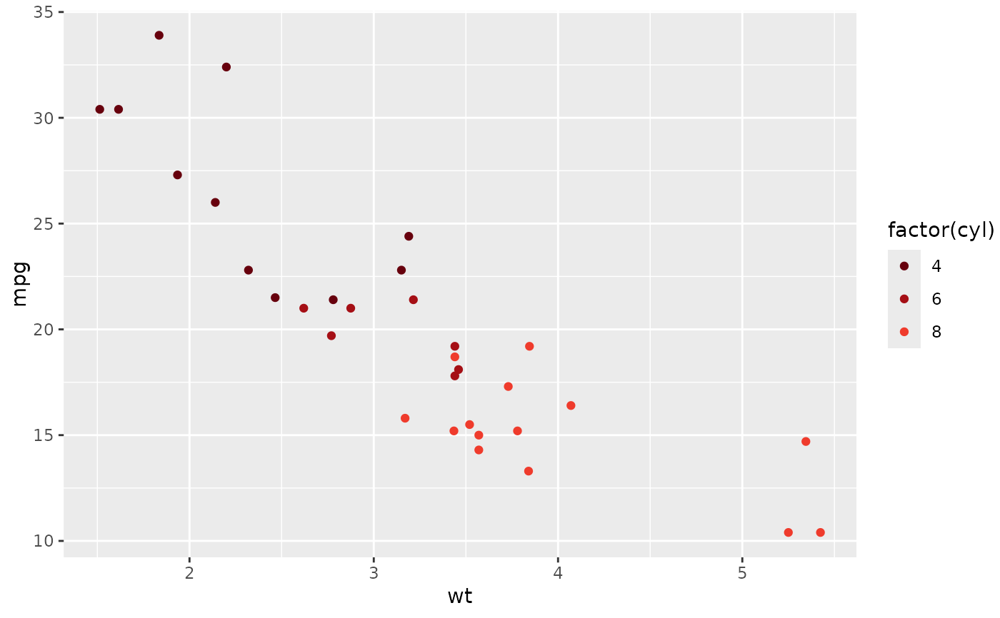
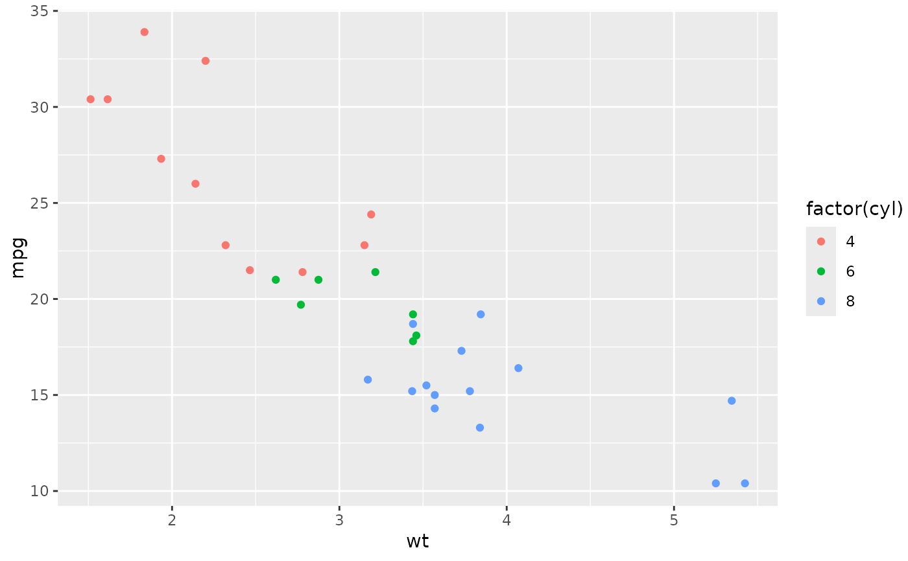

This function resets the gnomeR color palette back to the ggplot2 default palette for all
ggplot2 objects. A typical workflow would include this after a call to set_gnomer_palette()
function is no longer needed,
and subsequent calls to ggplot() will utilize the default color palette from ggplot2.
Usage
reset_gnomer_palette(env = rlang::caller_env())Arguments
- env
environment in which palette will take effect. Default is
rlang::caller_env().
Examples
library(ggplot2)
set_gnomer_palette()
ggplot(mtcars, aes(wt, mpg, color = factor(cyl))) +
geom_point()

reset_gnomer_palette()
#default reset
ggplot(mtcars, aes(wt, mpg, color = factor(cyl))) +
geom_point()
